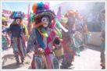
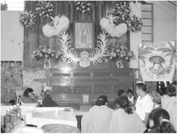
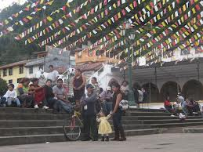
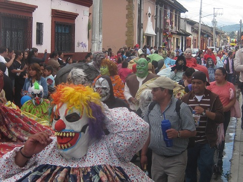
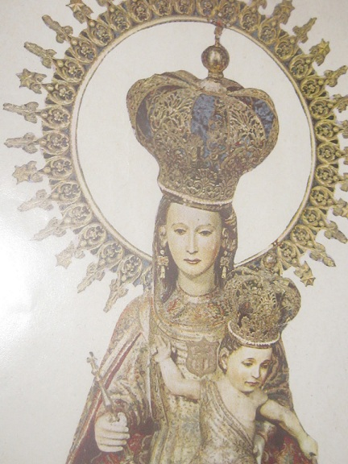

Baile de negros o máscaras, personajes disfrazados de diablos o muertos. En la localidad de Teopisca, decenas y decenas de hombres disfrazados de mujer y otros pintorescos personajes, conocidos como los "Negros", salieron a las calles este fin de semana como parte de una tradición que heredaron de sus antepasados. Se dice que el 1 de agosto de 1218, fiesta del santo fundador, Pedro Nolasco tuvo una visita de la Santísima Virgen, dándose a conocer como La Merced, que lo exhortó a fundar una Orden Religiosa con el fin de redimir a aquellos cristianos cautivos. En ese momento, parte de la Península Ibérica estaba dominada por los musulmanes y los piratas sarracenos que asolaban las costas del Mediterráneo, haciendo miles de cautivos a quienes llevaban al norte de África.
Fue así como Pedro Nolasco impulsó la creación de la Orden de la Merced, y se calcula que fueron alrededor de 300 mil los redimidos por los frailes mercedarios del cautiverio de los musulmanes. Tras lo ocurrido, el culto a Nuestra Señora de La Merced se extendió por España y luego por Francia e Italia. Los mercedarios estuvieron entre los primeros misioneros de América promoviendo el culto a la virgen entre sus seguidores latinos. Por ello, a la Virgen de La Merced se le conoce como la patrona de los cautivos y tiene muchos seguidores en varios países y en nuestra entidad chiapaneca, destacando las celebraciones que se realizan en San Cristóbal de Las Casas, con los "Panzudos" y la ciudad de Teopisca con el grupo de los "Negros". Se realiza del 13 al 24 de Septiembre.
Palacio Municipal s/n C.P. 29410. Teopisca, Chiapas.
Palacio Municipal s/n C.P. 29410. Teopisca, Chiapas.
Hombres disfrazados de los personajes que invadieron las calles y avenidas de Teopisca, el recorrido de los hombres vestidos de mujer y otros personajes causaron risotadas de propios, el paso de los "Negros, grupos musicales que recorren todas las calles.





posicione el mouse sobre las imágenes